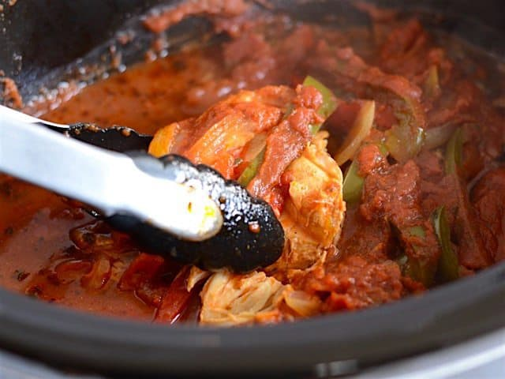

Italian Chicken Slop

Description
This easy slow cooker recipe provides a big ol' hunk of
shredded chicken slop that'll make your crappy little apartment
smell like an Italian gramma's kitchen.
There's enough slop to make it useful for several meals and
can easily be served over things like pasta or rice to stretch
it out into more servings.
Ingredients
- 3 bell peppers (any colors)
- 1 medium onion
- ~1.5 Ibs.chicken thighs
- 1 tsp basil
- 1 tsp oregano
- salt and peppper
- 24 oz jar of marinara sauce
Steps
- Slice the pepper and onions into strips and lay
half of them in the bottom of the slow cooker.
- Place chicken thighs evenly across top of strips
and season with the salt, pepper, basil, and oregana.
- Cover the chicken with the remaining onion and
pepper strips. Then pour the marinara sauce over
the top and cover the slow cooker.
- Cook on high for 4 hours or low for 8 hours.
- When cooked, shred the chicken with tongs and
mix up into a slop and serve over pasta or rice.